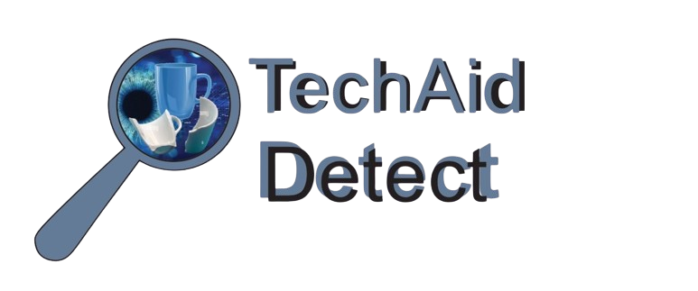

TechAID Dectect
background will Demo how our project will work but it will be a cup dectection.
Start Webcam
Stop Webcam
Run Detection
Run Defect Check
Last Result: None
Live Detection Chart
Reset Chart
Detection History
Clear History